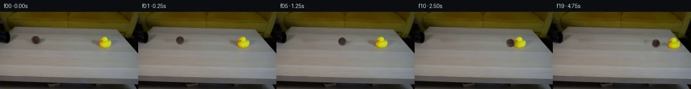

![首帧]()

Round 00
2026-11-04T19:45:20.247464+00:00像素候选变化代码 +272/−0inspection 更新
pixels 7eccb87326953ae6 · code 42f57dac85505c13
查看本轮 generate.py 真实 diff
--- previous/generate.py
+++ current/generate.py
@@ -0,0 +1,272 @@
+"""Continue the supplied photograph using local pixels and projected mechanics."""
+from pathlib import Path
+import json
+import math
+
+import cv2
+import numpy as np
+from PIL import Image, ImageDraw
+from scipy.ndimage import gaussian_filter, map_coordinates
+
+from artifact_io import save
+
+ROOT = Path(__file__).resolve().parent
+H, W = 144, 256
+INPUT = np.asarray(Image.open(ROOT / 'first_frame.png').convert('RGB'))
+ORIGINAL = INPUT.astype(np.float64)
+YY, XX = np.mgrid[:H, :W].astype(np.float64)
+BALL_START = np.array([65.8, 52.1])
+BALL_RADIUS = 7.35
+IMPACT = 2.5
+SPEED = (177.0 - BALL_START[0]) / IMPACT
+DUCK_PIVOT = np.array([194.5, 65.5])
+
+
+def smoothstep(a, b, value):
+ z = np.clip((value - a) / (b - a), 0, 1)
+ return z * z * (3 - 2 * z)
+
+
+def patch_envelope(bounds, feather=3):
+ x0, y0, x1, y1 = bounds
+ horizontal = smoothstep(x0, x0 + feather, XX) * (1 - smoothstep(x1 - feather, x1, XX))
+ vertical = smoothstep(y0, y0 + feather, YY) * (1 - smoothstep(y1 - feather, y1, YY))
+ return horizontal * vertical
+
+
+def reconstruct_table(bounds, donor_offset):
+ """Copy unobstructed same-row wood grain and match its local RGB trend."""
+ x0, y0, x1, y1 = bounds
+ donor = ORIGINAL[:, np.clip(np.arange(W) + donor_offset, 0, W - 1)]
+ # Estimate only low-frequency donor/target color differences from clean
+ # vertical strips surrounding the missing object, never from its pixels.
+ corrections = []
+ anchors = [x0 - 2, x1 + 2]
+ for anchor in anchors:
+ actual = ORIGINAL[:, anchor - 2:anchor + 3].mean(axis=1)
+ borrowed = donor[:, anchor - 2:anchor + 3].mean(axis=1)
+ corrections.append(gaussian_filter(actual - borrowed, sigma=(1.3, 0)))
+ blend = np.clip((XX - anchors[0]) / (anchors[1] - anchors[0]), 0, 1)
+ correction = corrections[0][:, None] * (1 - blend[..., None]) + corrections[1][:, None] * blend[..., None]
+ donor = np.clip(donor + correction, 0, 255)
+ envelope = patch_envelope(bounds)
+ restored = ORIGINAL * (1 - envelope[..., None]) + donor * envelope[..., None]
+ return restored, envelope
+
+
+# Each clean patch has a small, fixed footprint on the tabletop. Pixels outside
+# the two footprints are exactly retained. Difference sprites recover the
+# initial duck and its original soft photographic shadow without a cutout halo.
+BALL_CLEAN, BALL_SUPPORT = reconstruct_table((52, 41, 91, 65), 42)
+DUCK_CLEAN, DUCK_SUPPORT = reconstruct_table((171, 42, 215, 75), -45)
+CLEAN = ORIGINAL + (BALL_CLEAN - ORIGINAL) + (DUCK_CLEAN - ORIGINAL)
+DUCK_RESIDUAL = ORIGINAL - DUCK_CLEAN
+
+# Saturation locates the original yellow/orange silhouette. Filling its holes
+# includes the black eye. This separates object rotation from shadow sliding.
+saturation = np.maximum(ORIGINAL[..., 0], ORIGINAL[..., 1]) - ORIGINAL[..., 2]
+duck_binary = ((saturation > 42) & (XX >= 182) & (XX <= 207) & (YY >= 45) & (YY <= 68)).astype(np.uint8)
+duck_binary = cv2.morphologyEx(duck_binary, cv2.MORPH_CLOSE, np.ones((3, 3), np.uint8))
+from scipy.ndimage import binary_fill_holes
+duck_binary = binary_fill_holes(duck_binary).astype(np.uint8)
+duck_matte = gaussian_filter(duck_binary.astype(float), .55)
+# Dilating the matte retains the edge pixels, whereas residual shadow stays in
+# the second component. Their sum reconstructs the complete source exactly.
+duck_matte = np.clip(gaussian_filter(cv2.dilate(duck_binary, np.ones((3, 3), np.uint8)).astype(float), .5), 0, 1)
+DUCK_BODY_DELTA = DUCK_RESIDUAL * duck_matte[..., None]
+DUCK_SHADOW_DELTA = DUCK_RESIDUAL - DUCK_BODY_DELTA
+
+
+def warp_delta(sprite, dx, dy, clockwise_degrees=0.0, pivot=DUCK_PIVOT):
+ angle = math.radians(clockwise_degrees)
+ c, s = math.cos(angle), math.sin(angle)
+ matrix = np.array([[c, -s, pivot[0] + dx - c * pivot[0] + s * pivot[1]],
+ [s, c, pivot[1] + dy - s * pivot[0] - c * pivot[1]]])
+ return cv2.warpAffine(sprite, matrix, (W, H), flags=cv2.INTER_LINEAR,
+ borderMode=cv2.BORDER_CONSTANT, borderValue=0)
+
… diff truncated; 185 more lines …